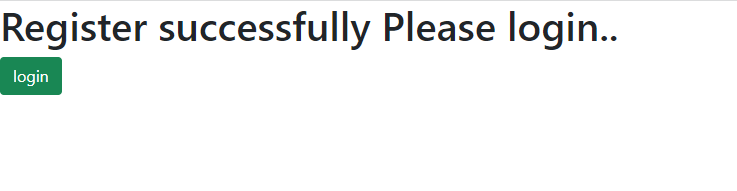
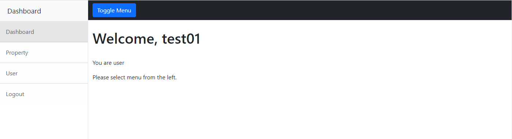
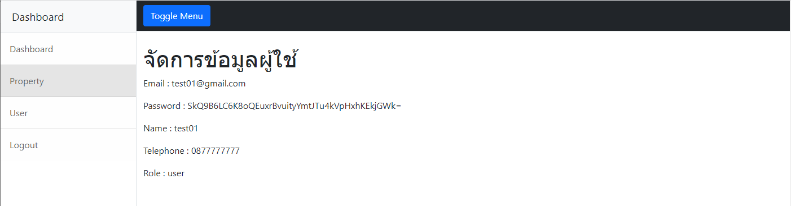

Workshop นี้ใช้ node.js ในการสร้างขึ้นมาโดยใช้ร่วมกับ module ชื่อ express ซึ่งเป็น module ไว้ใช้สำหรับทำ web-site ทำให้ลดจำนวนในการเขียน code ได้มาก นอกจากนั้นยังมี ejs ช่วยในเรื่องของ template ของ web-site ทำให้ code ดูเป็นระเบียบและดูง่ายมากขึ้น นอกจากนั้นยังมีการเชื่อมต่อกับ Database จึงต้องทำการลง mysql ด้วย และสุดท้ายเพื่อให้ง่ายต่อการเขียน code และไม่ต้องทำการ connect กับ database บ่อยๆ จึงได้เลือกใช้ cookie-session มาช่วย โดย module ที่กล่าวมาทั้งหมดนั้นทำการ install ผ่าน npm โดยพิมพ์ npm install mysql express ejs cookie-session --save โดยหน้า web-page ที่ปรากฏอยู่นั้นคือหน้าแรกของ web-site ซึ่งเป็นหน้าที่ไว้ search หา Property ที่ต้องการปล่อยให้เช้า หรือ ขาย โดยพิมพ์ keyword ที่ต้องการขึ้นหา เช่น ชื่อสถานที่ หรือ location ที่ต้องการ โดยเมื่อกด search แล้วจะปรากฏสถานที่ที่ต้องการค้นหาขึ้นมาในรูปแบบของ card ซึ่งแต่ละ card นั้นจะดึงข้อมูลจาก database มาแสดงและนอกจากนั้นยังสามารถ กดที่ปุ่ม detail เพื่อไปยังหน้าดูรายละเอียดของ property นั้นๆได้ด้วยดังรูปด้านล่าง
โดยการมาที่หน้า property_detail นั้นจะใช้ method get โดยจะส่ง id ที่เลือกมาด้วยเพื่อจะนำค่าของ id ที่ได้นั้นไปค้นหาใน database และนำข้อมูลทั้งหมดโชว์ขึ้นมาในหน้าดังกล่าว นอกจากนั้นยังมีระบบ register ไว้สำหรับ login เพื่อเข้าจัดการข้อมูลต่างๆของตนเอง หรือลงประกาศ property โดยมี web-page ดังรูปด้านล่าง
เมื่อกรอกข้อมูลสำคัญทั้งหมดเรียบร้อยและกดที่ปุ่ม Register จะปรากฏข้อความดังรูปด้านล่างและสามารถ login ได้
ทำการกรอก email และ password ที่พึ่ง register ไปในช่อง login และ password เมื่อ login สำเร็จจะไปยังหน้าของ dashboard ดังรูปด้านล่าง
ในหน้า dashboard เราจะสามารถจัดการข้อมูลต่างๆได้ โดยจะแบ่งเป็น role ซึ่งจะมี admin หรือ user ในกรณีของ user จะแก้ไขได้เฉพาะข้อมูลของตนเองได้เท่านั้น แต่ถ้าเป็น admin จะสามารถแก้ไขได้ทั้งหมด โดยความแตกต่างจะเป็นดังรูปด้านล่าง
จะไม่ปรากฏอะไรในตารางจนกว่าจะทำการ create a new property ขึ้นมา
จะปรากฏข้อมูลของ property ใน database ทั้งหมดและสามารถทำการปรับแก้ไขได้โดยการกด edit ซึ่งจะไปยังหน้า edit พร้อมข้อมูลเดิมที่ยังไม่ได้แก้ไขดังรูปด้านล่าง

และเมื่อกดที่ปุ่ม create a new property จะปรากฏหน้าเหมือนกับ edit ซึ่งในหน้านี้จะเป็นการเพิ่มข้อมูลไปแทนที่จะแก้ไขดังรูปด้านล่าง ในการเพิ่มข้อมูลอสังหานั้นสามารถ upload รูปจากเครื่องผู้ใช้ไปยัง server ได้ด้วยโดยจะมีการตรวจสอบประเภทของ file ก่อนจะทำการ upload ขึ้น server โดยใช้ module multer และ fs มาช่วยจัดการ
ต่อมาจะเป็น tab ของ user ซึ่งจะเป็นกรณีเดียวกับของ property ซึ่งจะแบ่งเป็น 2 role เช่นกันโดยถ้าผู้ใช้เป็น user จะปรากฏดังรูปด้านล่างนี้
โดยจะปรากฏเพียงข้อมูลของผู้ใช้งานเท่านั้น แต่ถ้าเป็นกรณีผู้ใช้งานเป็น admin นั้นจะปรากฏดังนี้
ซึ่งจะปรากฏข้อมูลของผู้ใช้งานทั้งหมดแต่จะไม่สามารถทราบ password ได้เพราะทำการ hash ผ่าน sha256 เอาไว้เพื่อกันนการ hack ข้อมูลโดยผู้ไม่ประสงค์ดี และ admin จะสามารถ edit role ของผู้ใช้งานได้ด้วยโดยการเลือก role ที่ต้องการและกดปุ่ม edit และ tab สุดท้านคือ Logout เมื่อกดจะทำการ logout และกลับสู่หน้าหลักนั้นเอง